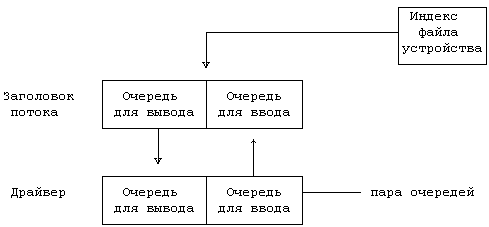
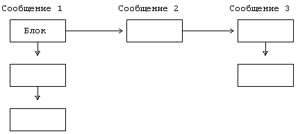
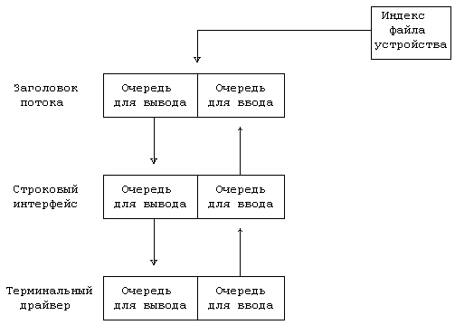
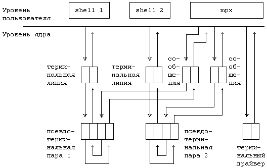

Схема реализации драйверов устройств, хотя и отвечает заложенным требованиям, страдает некоторыми недостатками, которые с годами стали заметнее. Разные драйверы имеют тенденцию дублировать свои функции, в частности драйверы, которые реализуют сетевые протоколы и которые обычно включают в себя секцию управления устройством и секцию протокола. Несмотря на то, что секция протокола должна быть общей для всех сетевых устройств, на практике это не так, поскольку ядро не имеет адекватных механизмов для общего использования. Например, символьные списки могли бы быть полезными благодаря своим возможностям в буферизации, но они требуют больших затрат ресурсов на посимвольную обработку. Попытки обойти этот механизм, чтобы повысить производительность системы, привели к нарушению модульности подсистемы управления вводом-выводом. Отсутствие общности на уровне драйверов распространяется вплоть до уровня команд пользователя, на котором несколько команд могут выполнять общие логические функции, но различными средствами. Еще один недостаток построения драйверов заключается в том, что сетевые протоколы требуют использования средства, подобного строковому интерфейсу, в котором каждая дисциплина реализует одну из частей протокола и составные части соединяются гибким образом. Однако, соединить традиционные строковые интерфейсы довольно трудно.
Ричи недавно разработал схему, получившую название "потоки" (streams), для повышения модульности и гибкости подсистемы управления вводом-выводом. Нижеследующее описание основывается на его работе [Ritchie 84b], хотя реализация этой схемы в версии V слегка отличается. Поток представляет собой полнодуплексную связь между процессом и драйвером устройства. Он состоит из совокупности линейно связанных между собой пар очередей, каждая из которых (пара) включает одну очередь для ввода и другую - для вывода. Когда процесс записывает данные в поток, ядро посылает данные в очереди для вывода; когда драйвер устройства получает входные данные, он пересылает их в очереди для ввода к процессу, производящему чтение. Очереди обмениваются сообщениями с соседними очередями, используя четко определенный интерфейс. Каждая пара очередей связана с одним из модулей ядра, таким как драйвер, строковый интерфейс или протокол, и модули ядра работают с данными, прошедшими через соответствующие очереди.
Каждая очередь представляет собой структуру данных, состоящую из следующих элементов:
- процедуры открытия, вызываемой во время выполнения системной функции open
- процедуры закрытия, вызываемой во время выполнения системной функции close
- процедуры "вывода", вызываемой для передачи сообщения в очередь
- процедуры "обслуживания", вызываемой, когда очередь запланирована к исполнению
- указателя на следующую очередь в потоке
- указателя на список сообщений, ожидающих обслуживания
- указателя на внутреннюю структуру данных, с помощью которой поддерживается рабочее состояние очереди
- флагов, а также верхней и нижней отметок, используемых для управления потоками данных, диспетчеризации и поддержания рабочего состояния очереди.
Ядро выделяет пары очередей, соседствующие в памяти; следовательно, очередь легко может отыскать своего партнера по паре.

Рисунок 10.20. Поток после открытия
Устройство с потоковым драйвером является устройством посимвольного ввода-вывода; оно имеет в таблице ключей устройств соответствующего типа специальное поле, которое указывает на структуру инициализации потока, содержащую адреса процедур, а также верхнюю и нижнюю отметки, упомянутые выше. Когда ядро выполняет системную функцию open и обнаруживает, что файл устройства имеет тип "специальный символьный", оно проверяет наличие нового поля в таблице ключей устройств посимвольного ввода-вывода. Если в таблице отсутствует соответствующая точка входа, то драйвер не является потоковым, и ядро выполняет процедуру, обычную для устройств посимвольного ввода-вывода. Однако, при первом же открытии потокового драйвера ядро выделяет две пары очередей одну для заголовка потока и другую для драйвера. У всех открытых потоков модуль заголовка имеет идентичную структуру: он содержит общую процедуру "вывода" и общую процедуру "обслуживания" и имеет интерфейс с модулями ядра более высокого уровня, выполняющими функции read, write и ioctl. Ядро инициализирует структуру очередей драйвера, назначая значения указателям каждой очереди и копируя адреса процедур драйвера из структуры инициализации драйвера, и запускает процедуру открытия. Процедура открытия драйвера выполняет обычную инициализацию, но при этом сохраняет информацию, необходимую для повторного обращения к ассоциированной с этой процедурой очереди. Наконец, ядро отводит специальный указатель в копии индекса в памяти для ссылки на заголовок потока (Рисунок 10.20). Когда еще один процесс открывает устройство, ядро обнаруживает назначенный ранее поток с помощью этого указателя и запускает процедуру открытия для всех модулей потока.
Модули поддерживают связь со своими соседями по потоку путем передачи сообщений. Сообщение состоит из списка заголовков блоков, содержащих информацию сообщения; каждый заголовок блока содержит ссылку на место расположения начала и конца информации блока. Существует два типа сообщений - управляющее и информационное, которые определяются указателями типа в заголовке сообщения. Управляющие сообщения могут быть результатом выполнения системной функции ioctl или результатом особых условий, таких как зависание терминала, а информационные сообщения могут возникать в результате выполнения системной функции write или в результате поступления данных от устройства.

Рисунок 10.21. Сообщения в потоках
Когда процесс производит запись в поток, ядро копирует данные из адресного пространства задачи в блоки сообщения, которые выделяются модулем заголовка потока. Модуль заголовка потока запускает процедуру "вывода" для модуля следующей очереди, которая обрабатывает сообщение, незамедлительно передает его в следующую очередь или ставит в эту же очередь для последующей обработки. В последнем случае модуль связывает заголовки блоков сообщения в список с указателями, формируя двунаправленный список (Рисунок 10.21). Затем он устанавливает в структуре данных очереди флаг, показывая тем самым, что имеются данные для обработки, и планирует собственное обслуживание. Модуль включает очередь в список очередей, требующих обслуживания и запускает механизм диспетчеризации; планировщик (диспетчер) вызывает процедуры обслуживания для каждой очереди в списке. Ядро может планировать обслуживание модулей по программному прерыванию, подобно тому, как оно вызывает функции в таблице ответных сигналов (см. главу 8); обработчик программных прерываний вызывает индивидуальные процедуры обслуживания.

Рисунок 10.22. Продвижение модуля к потоку
Процессы могут "продвигать" модули к открытому потоку, используя вызов системной функции ioctl. Ядро помещает выдвинутый модуль сразу под заголовком потока и связывает указатели очереди таким образом, чтобы сохранить двунаправленную структуру списка. Модули, расположенные в потоке ниже, не беспокоятся о том, связаны ли они с заголовком потока или же с выдвинутым модулем: интерфейсом выступает процедура "вывода" следующей очереди в потоке; а следующая очередь принадлежит только что выдвинутому модулю. Например, процесс может выдвинуть модуль строкового интерфейса в поток терминального драйвера с целью обработки символов стирания и удаления (Рисунок 10.22); модуль строкового интерфейса не имеет тех же составляющих, что и строковые интерфейсы, рассмотренные в разделе 10.3, но выполняет те же функции. Без модуля строкового интерфейса терминальный драйвер не обработает вводные символы и они поступят в заголовок потока в неизмененном виде. Сегмент программы, открывающий терминал и выдвигающий строковый интерфейс, может выглядеть следующим образом:
fd = open("/dev/ttyxy",O_RDWR);
ioctl(fd,PUSH,TTYLD);
где PUSH - имя команды, а TTYLD - число, идентифицирующее модуль строкового интерфейса. Не существует ограничения на количество модулей, могущих быть выдвинутыми в поток. Процесс может выталкивать модули из потока в порядке поступления, "первым пришел - первым вышел", используя еще один вызов системной функции ioctl
ioctl(fd,POP,0);
При том, что модуль строкового интерфейса выполняет обычные функции по управлению терминалом, соответствующее ему устройство может быть средством сетевой связи вместо того, чтобы обеспечивать связь с одним-единственным терминалом. Модуль строкового интерфейса работает одинаково, независимо от того, какого типа модуль расположен ниже него. Этот пример наглядно демонстрирует повышение гибкости вследствие соединения модулей ядра.
Пайк описывает реализацию мультиплексных виртуальных терминалов, использующую потоки (см. [Pike 84]). Пользователь видит несколько виртуальных терминалов, каждый из которых занимает отдельное окно на экране физического терминала. Хотя в статье Пайка рассматривается схема для интеллектуальных графических терминалов, она работала бы и для терминалов ввода-вывода тоже; каждое окно занимало бы целый экран и пользователь для переключения виртуальных окон набирал бы последовательность управляющих клавиш.

Рисунок 10.23. Отображение виртуальных окон на экране физического терминала
На Рисунке 10.23 показана схема расположения процессов и модулей ядра. Пользователь вызывает процесс mpx, контролирующий работу физического терминала. Mpx читает данные из линии физического терминала и ждет объявления об управляющих событиях, таких как создание нового окна, переключение управления на другое окно, удаление окна и т.п.
Когда mpx получает уведомление о том, что пользователю нужно создать новое окно, он создает процесс, управляющий новым окном, и поддерживает связь с ним через псевдотерминал. Псевдотерминал - это программное устройство, работающее по принципу пары: выходные данные, направляемые к одной составляющей пары, посылаются на вход другой составляющей; входные данные посылаются тому модулю потока, который расположен выше по течению. Для того, чтобы открыть окно (Рисунок 10.24), mpx назначает псевдотерминальную пару и открывает одну из составляющих пары, направляя поток к ней (открытие драйвера служит гарантией того, что псевдотерминальная пара не была выбрана раньше). Mpx ветвится и новый процесс открывает другую составляющую псевдотерминальной пары. Mpx выдвигает модуль управления сообщениями в псевдотерминальный поток, чтобы преобразовывать управляющие сообщения в информационные (об этом в следующем параграфе), а порожденный процесс помещает в псевдотерминальный поток модуль строкового интерфейса перед запуском shell'а. Этот shell теперь выполняется на виртуальном терминале; для пользователя виртуальный терминал неотличим от физического.
/* предположим, что дескрипторы файлов 0 и 1 уже относятся к
физическому терминалу */
для(;;) /* цикл */
{
выбрать(ввод); /* ждать ввода из какой-либо линии */
прочитать данные, введенные из линии;
переключить(линию с вводимыми данными)
{
если выбран физический терминал: /* данные вводятся по ли-
нии физического терми-
нала */
если(считана управляющая команда) /* например, создание
нового окна */
{
открыть свободный псевдотерминал;
пойти по ветви нового процесса:
если(процесс родительский)
{
выдвинуть интерфейс сообщений в сторону mpx;
продолжить; /* возврат в цикл "для" */
}
/* процесс-потомок */
закрыть ненужные дескрипторы файлов;
открыть другой псевдотерминал из пары, выбрать stdin,
stdout, stderr;
выдвинуть строковый интерфейс терминала;
запустить shell; /* подобно виртуальному терминалу */
}
/* "обычные" данные, появившиеся через виртуальный терминал */
демультиплексировать считывание данных с физического тер-
минала, снять заголовки и вести запись на соответствую-
щий псевдотерминал;
продолжить; /* возврат в цикл "для" */
если выбран логический терминал: /* виртуальный терминал
связан с окном */
закодировать заголовок, указывающий назначение информации
окна;
переписать заголовок и информацию на физический терминал;
продолжить; /* возврат в цикл "для" */
}
}
|
Рисунок 10.24. Псевдопрограмма мультиплексирования окон
Процесс mpx является мультиплексором, направляющим вывод данных с виртуальных терминалов на физический терминал и демультиплексирующим ввод данных с физического терминала на подходящий виртуальный. Mpx ждет поступления данных по любой из линий, используя системную функцию select. Когда данные поступают от физического терминала, mpx решает вопрос, являются ли поступившие данные управляющим сообщением, извещающим о необходимости создания нового окна или удаления старого, или же это информационное сообщение, которое необходимо разослать процессам, считывающим информацию с виртуального терминала. В последнем случае данные имеют заголовок, идентифицирующий тот виртуальный терминал, к которому они относятся; mpx стирает заголовок с сообщения и переписывает данные в соответствующий псевдотерминальный поток. Драйвер псевдотерминала отправляет данные через строковый интерфейс терминала процессам, осуществляющим чтение. Обратная процедура имеет место, когда процесс ведет запись на виртуальный терминал; mpx присоединяет заголовок к данным, информируя физический терминал, для вывода в какое из окон предназначены эти данные.
Если процесс вызывает функцию ioctl с виртуального терминала, строковый интерфейс терминала задает необходимые установки терминала для его виртуальной линии; для каждого из виртуальных терминалов установки могут быть различными. Однако, на физический терминал должна быть послана и кое-какая информация, зависящая от типа устройства. Модуль управления сообщениями преобразует управляющие сообщения, генерируемые функцией ioctl, в информационные сообщения, предназначенные для чтения и записи их процессом mpx, и эти сообщения передаются на физическое устройство.
Ричи упоминает о том, что им была предпринята попытка создания потоков только с процедурами "вывода" или только с процедурами обслуживания. Однако, процедура обслуживания необходима для управления потоками данных, так как модули должны иногда ставить данные в очередь, если соседние модули на время закрыты для приема данных. Процедура "вывода" так же необходима, поскольку данные должны иногда доставляться в соседние модули незамедлительно. Например, строковому интерфейсу терминала нужно вести эхо-сопровождение ввода данных на терминале в темпе с процессом. Системная функция write могла бы запускать процедуру "вывода" для следующей очереди непосредственно, та, в свою очередь, вызывала бы процедуру "вывода" для следующей очереди и так далее, не нуждаясь в механизме диспетчеризации. Процесс приостановился бы в случае переполнения очередей для вывода. Однако, со стороны ввода модули не могут приостанавливаться, поскольку их выполнение вызывается программой обработки прерываний, иначе был бы приостановлен совершенно безобидный процесс. Связь между модулями не должна быть симметричной в направлениях ввода и вывода, хотя это и делает схему менее изящной.
Также было бы желательно реализовать каждый модуль в виде отдельного процесса, но использование большого количества модулей привело бы к переполнению таблицы процессов. Модули наделяются специальным механизмом диспетчеризации - программным прерыванием, независимым от обычного планировщика процессов. По этой причине модули не могут приостанавливать свое выполнение, так как они приостанавливали бы тем самым произвольный процесс (тот, который прерван). Модули должны хранить внутри себя информацию о своем состоянии, что делает лежащие в их основе программы более громоздкими, чем если бы приостановка выполнения была разрешена.
В реализации потоков можно выделить несколько отклонений или несоответствий:
- Учет ресурсов процесса в потоках затрудняется, поскольку модулям необязательно выполняться в контексте процесса, использующего поток. Ошибочно предполагать, что все процессы одинаково используют модули потоков, поскольку одним процессам может потребоваться использование сложных сетевых протоколов, тогда как другие могут использовать простые строковые интерфейсы.
- Пользователи имеют возможность переводить терминальный драйвер в режим без обработки, в котором функция read возвращает управление через короткий промежуток времени в случае отсутствия данных (например, если newtty.c_cc[VMIN] = 0 на Рисунке 10.17). Эту особенность сложно реализовать в потоковой среде без подключения специальной программы на уровне заголовка потока.
- Потоки выступают средствами линейной связи и не могут позволить производить с легкостью мультиплексирование на уровне ядра. В примере использования окон, рассмотренном в предыдущем разделе, выполнялось мультиплексирование на уровне пользовательского процесса.
Несмотря на эти несоответствия, с потоками связываются большие надежды в совершенствовании разработки модулей драйвера.
/* предположим, что дескрипторы файлов 0 и 1 уже относятся к
физическому терминалу */
для(;;) /* цикл */
{
выбрать(ввод); /* ждать ввода из какой-либо линии */
прочитать данные, введенные из линии;
переключить(линию с вводимыми данными)
{
если выбран физический терминал: /* данные вводятся по ли-
нии физического терми-
нала */
если(считана управляющая команда) /* например, создание
нового окна */
{
открыть свободный псевдотерминал;
пойти по ветви нового процесса:
если(процесс родительский)
{
выдвинуть интерфейс сообщений в сторону mpx;
продолжить; /* возврат в цикл "для" */
}
/* процесс-потомок */
закрыть ненужные дескрипторы файлов;
открыть другой псевдотерминал из пары, выбрать stdin,
stdout, stderr;
выдвинуть строковый интерфейс терминала;
запустить shell; /* подобно виртуальному терминалу */
}
/* "обычные" данные, появившиеся через виртуальный терминал */
демультиплексировать считывание данных с физического тер-
минала, снять заголовки и вести запись на соответствую-
щий псевдотерминал;
продолжить; /* возврат в цикл "для" */
если выбран логический терминал: /* виртуальный терминал
связан с окном */
закодировать заголовок, указывающий назначение информации
окна;
переписать заголовок и информацию на физический терминал;
продолжить; /* возврат в цикл "для" */
}
}
|
Рисунок 10.24. Псевдопрограмма мультиплексирования окон
Предыдущая глава || Оглавление || Следующая глава